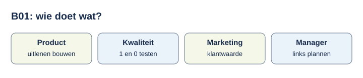
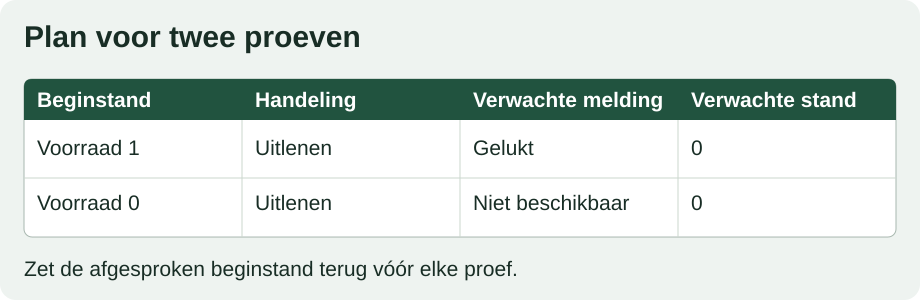
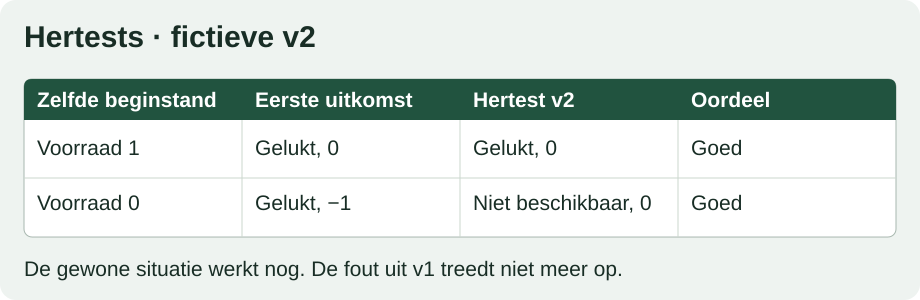
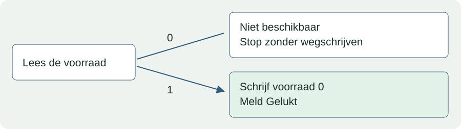

Deadline
Bewijsplek
Overdrachten bij dit issue
- Krijg je van
- Geef je door aan
Start bij A. Volg het fictieve B01-projectgesprek onder D, E, I en M.
| Rol | Kies en ontwerp | Bouw en test | Leg het werk vast om 16.00 uur | Mondeling– |
|---|---|---|---|---|
| Manager | ||||
| Product | ||||
| Kwaliteit | ||||
| Marketing |
De verwachte berichten die Product en Kwaliteit in het voorbeeld afspreken. Bekijk de testinstructies voor GET en POST en de uitleenregel.
GET · voorraad opvragen
| Situatie | Aanvraag | Verwacht JSON-antwoord |
|---|---|---|
| Gewoon, startvoorraad 1 | GET /exec?api=voorraad | {"code":"B01","voorraad":1} |
| Lastig, startvoorraad 0 | GET /exec?api=voorraad | {"code":"B01","voorraad":0} |
POST · uitlenen aanvragen
| Situatie | Aanvraag | Verwacht JSON-antwoord |
|---|---|---|
| Gewoon, daarna uitlenen | POST /exec · JSON: {"code":"B01","actie":"uitlenen"} | {"gelukt":true,"voorraad":0} |
| Lastig, daarna nogmaals uitlenen | POST /exec · JSON: {"code":"B01","actie":"uitlenen"} | {"gelukt":false,"voorraad":0,"melding":"Niet beschikbaar"} |
Die labels horen bij de voorbeeldcasus. GitHub Actions beschrijft welke automatische tests zijn uitgevoerd.
Deze README brengt je naar de gesprekken onder D, E, I en M.
# B01 · Uitleenbalie
## Klant
Een klein verhuurbedrijf wil voorkomen dat twee klanten hetzelfde
balletje krijgen beloofd. Een voorraadgetal en een duidelijke melding
helpen de medewerker direct zien of B01 beschikbaar is.
## Opbrengst en verdienidee
Een juiste voorraad voorkomt zoekwerk en dubbele toezeggingen.
€19 per maand voor gebruik en onderhoud is onze hypothese.
Klantcontact of verkoop is niet gedaan.
## Hoofdissues
D · klantwens, ontwerp en twee verwachtingen
E · eerste versie, eerste uitkomsten en verbeterpunt
I · verbeterde versie en twee hertests, met verwijzing naar klantwaarde in D (Marketing J)
M · voorbereiding van de drie mondelingvragen vóór 8 december
## Code, demo en Actions
- Code: se2/b01/mvp3/Code.gs
- Demo: link naar de geteste B01-versie
- Actions: link naar de geslaagde regeltest
## Zo probeer je het
1. Open de geteste B01-versie.
2. Begin bij voorraad 1. Klik op Uitlenen.
3. Klik nogmaals. Vergelijk beide uitkomsten met D.
4. Open direct de voorbeelden voor [GET](#api-get) en [POST](#api-post). De technische handleiding legt uit hoe je ze uitvoert.
## Werk uit les 1–4
- Manager: teamafspraken en bewijslinks.
- Marketing: klantwens, klantproef en verdienidee.
- Product: ontwerp, code en werkende uitleenhandeling.
- Kwaliteit: proefopzet, eerste uitkomsten en hertests.
## Wat nog ontbreekt
We hebben niet onderzocht of een echt verhuurbedrijf de functie wil
gebruiken of voor deze prijs wil betalen.
Een uitleengeschiedenis per balletje is nog niet gebouwd.
Bij deze fictieve uitleenbalie betekent voorraad 1 dat B01 beschikbaar is. Bij 0 is het uitgeleend. Het teamgesprek zelf staat in de keuzematrix.
Manager heeft de vier hoofdissues aangemaakt, de verantwoordelijken toegewezen en de links in de README gezet. Mijn klantwens: een verhuurmedewerker ziet meteen of B01 vrij is. Zo belooft die het balletje niet aan twee klanten. Product en Kwaliteit, kunnen jullie hiermee verder?
De link naar D staat nu in de README. In v0 hebben we alleen een ontwerp. We weten nog niet wat de app bij voorraad 0 moet tonen en bewaren. Daardoor kan Kwaliteit de grensproef niet afmaken. Product zet vandaag een voorstel in D.

Ik denk aan één voorraadgetal of een apart record per balletje. Voor één balletje lijkt een getal me genoeg. Marketing, moet de medewerker ook kunnen zien welk balletje is uitgeleend?

Marketing zegt dat beschikbaarheid voorlopig genoeg is. Product, blijft de voorraad bij 0 ook echt op 0? Ik wil naast de melding ook de stand teruglezen.
Dan houden we één getal. Invoer: B01 en Uitlenen. Bij 1 krijg je Gelukt en wordt de stand 0. Bij 0 krijg je Niet beschikbaar en blijft de stand 0. Terugbrengen zet 0 terug naar 1. Een apart record hebben we alleen geschetst.
Ik zet in D twee proeven klaar. Start 1: Uitlenen geeft Gelukt en stand 0. Start 0: Uitlenen geeft Niet beschikbaar en stand 0. Vóór elke proef zet ik de beginstand terug. Zonder scherm lees ik met GET en probeer ik Uitlenen met POST. De verwachte antwoorden staan hieronder.

Alle vier de bijdragen staan in D. Een teamgenoot liep de twee proeven op papier door. Ik heb vanaf de README de link naar D geopend en docenttoegang gecontroleerd. In dit voorbeeld heb ik formulier #1 één keer verstuurd. De leerlingnummers staan alleen daar.
Terug bij D na de klantproef in E: de verhuurmedewerker moet snel weten of die B01 kan meegeven. Een stand die klopt voorkomt dubbele toezeggingen. Misschien betaalt de eigenaar €19 per maand voor gebruik en onderhoud. Dat bedrag hebben we niet bij een klant getoetst.
Goed dat je opschrijft wat je tijdens de teamproef zag. Ik laat het bedrag bij jouw reactie als aanname staan. Product, link vanuit I naar die reactie.
Product, wat stuurt het scherm naar de voorraadregel? Kwaliteit wil dezelfde handeling ook zonder scherm kunnen proberen. Zet hier wie de aanvraag verwerkt en wat het scherm bij een weigering krijgt.

Hier is de eerste demo om Uitlenen te proberen. Die bewaart de voorraad in je browser. Voor onze fictieve v1 hebben we een apart voorbeeld met gedeelde voorraad: het scherm stuurt B01 en de actie Uitlenen, de backend geeft de melding en de stand terug. De fout uit die versie zit niet in deze browserdemo. Voor de proef gebruiken we fictieve gegevens.
Een teamgenoot speelde de verhuurmedewerker in de fictieve proef met v1. Ik vroeg: “Kun je B01 nog aan iemand meegeven?” Bij 0 klikte die toch op Uitlenen. Ik legde pas daarna de bedoeling uit. Kwaliteit, wat stond er bij jou na die klik?

Mijn uitkomsten horen bij de fictieve v1. Start 1: Gelukt, voorraad 0. Die proef slaagt. Start 0: ook Gelukt, maar voorraad −1. Die proef faalt. In de proef zonder scherm vergelijken we bij dezelfde POST de melding én de opgeslagen stand. Product, zorg dat de stand bij 0 ongewijzigd blijft.

We pakken eerst de fout bij 0 aan. Product weigert daar de uitleenactie. Bij 1 moet uitlenen blijven werken. Kwaliteit, gebruik straks dezelfde twee beginstanden. Ik zet het verbeterpunt door naar I.
Voor v2 heb ik de controle vóór het opslaan gezet. Bij 0 stopt de regel. Bij 1 schrijft die nog steeds 0 weg. De aangepaste regel staat in Code.gs. De klantwaarde staat bij J onder D. Ik deel de verbeterde demo hieronder voor Kwaliteit.
Ik pak de twee proeven uit E erbij. Ik zet de beginstand telkens terug. Product, check ik bij 0 alleen de melding of ook de stand daarna?
Check allebei. Bij 0 verwacht je Niet beschikbaar en blijft de stand 0. Bij 1 verwacht je Gelukt en wordt de stand 0. Hier is de bestaande live B01-demo met gedeelde voorraad. Open die met je Fioretti-account.
Fictieve hertest van v2: bij start 1 kreeg ik Gelukt en stand 0, net als in v1. Bij start 0 kreeg ik nu Niet beschikbaar en bleef de stand 0. Beide proeven slagen in het voorbeeld. De gelinkte groene Actions-run is echt uitgevoerd. Die test de voorraadregel met een nepsheet. De run zegt niets over de live demo.

De probeerlink in de README wees nog naar de browserdemo. Ik heb hem vervangen door de B01-demo die Product in I deelde. Hieronder staan de definitieve demo en onze README met D, E, I en M. In een privévenster heb ik gekeken wat bezoekers zien. Docenttoegang heb ik apart gecontroleerd. Voor de eindinlevering stuur ik één README-link via formulier #3.

Ik open mijn grensproef uit I. In v1 werd de stand −1. In v2 bleef die op 0. Product, kun je in de code aanwijzen waarom? Een volgende proef is om dezelfde handeling in de live demo te controleren.
Hier lees ik de voorraad. Bij 0 geeft de regel Niet beschikbaar terug en stopt die vóór het wegschrijven. Kwaliteit liet zien dat de eerste versie daar toch afboekte. Als iemand B01 eerst terugbrengt, staat er weer 1 en kan die opnieuw uitlenen.

In D wijs ik mijn klantwens aan: één blik moet genoeg zijn om te zien of B01 vrij is. De teamproef liet zien waarom we daar een duidelijke melding bij nodig hebben. Als de verhuurder elk balletje apart wil volgen, zou ik opnieuw met Product naar de gegevens kijken. Of iemand €19 wil betalen, weten we nog niet.
Voor B01 is één getal genoeg. Met meerdere balletjes weet je met alleen dat getal hoeveel er vrij zijn. Voor de vraag welk balletje weg is, hebben we per balletje een record nodig. Dat hebben we in v2 nog niet gebouwd.
Ik laat zien waar ik de links naar E en I in de README heb gezet. Door de vraag van Kwaliteit zijn we ook de opgeslagen stand gaan controleren. Product wist daardoor wat er moest veranderen. Bij een volgende taak spreken we vóór het bouwen af welke stand én melding we testen.

 API-aanvragen en verwachte antwoorden
API-aanvragen en verwachte antwoorden Over B01
Over B01